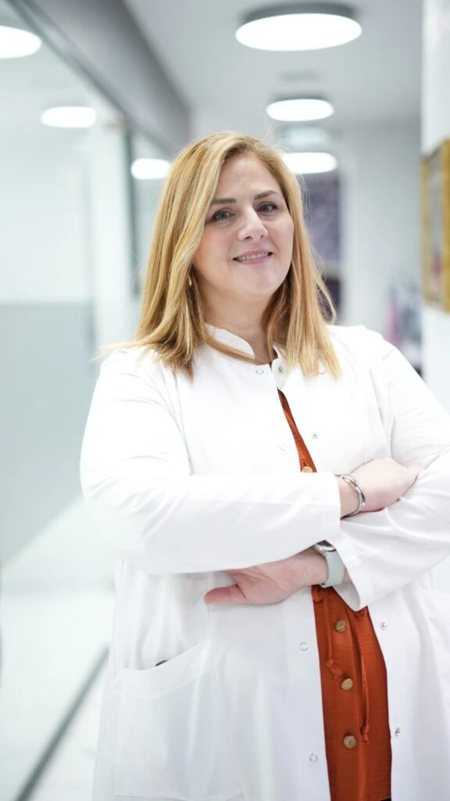

Toothbrushing and daily oral care
How often should you brush? Basics of fluoride, technique and cleaning between teeth.
Read article ↗
Professional background, oral health information and workplace details for dentist Nazlı Subutay.
Learn more WhatsApp appointment
Graduated from Yeditepe University Faculty of Dentistry in 2007. Her professional interests include implantology, prosthetic treatments and aesthetic dental procedures.
Learn more →Find information about dental care, preventive habits and the practice.
Practice details →
Information and guidance on everyday dental care.
How often should you brush? Basics of fluoride, technique and cleaning between teeth.
Read article ↗Why gums may bleed, signs to watch for and everyday care.
Read article ↗Understanding tooth decay, fluoride and eating habits.
Read article ↗